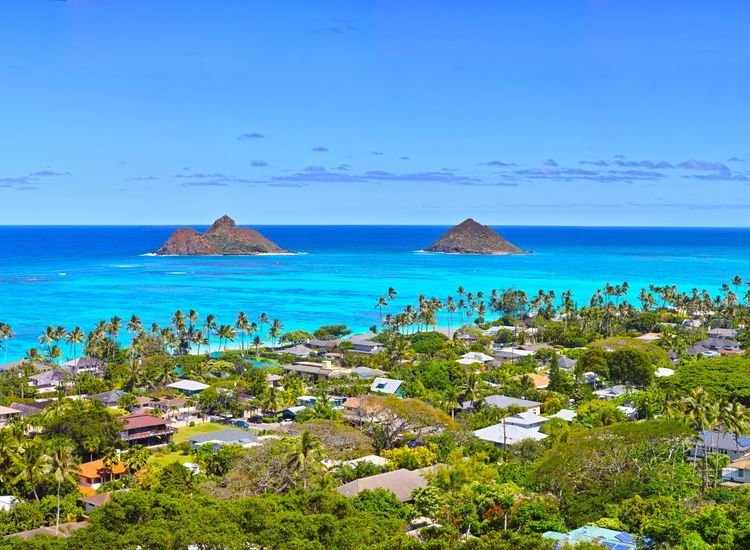
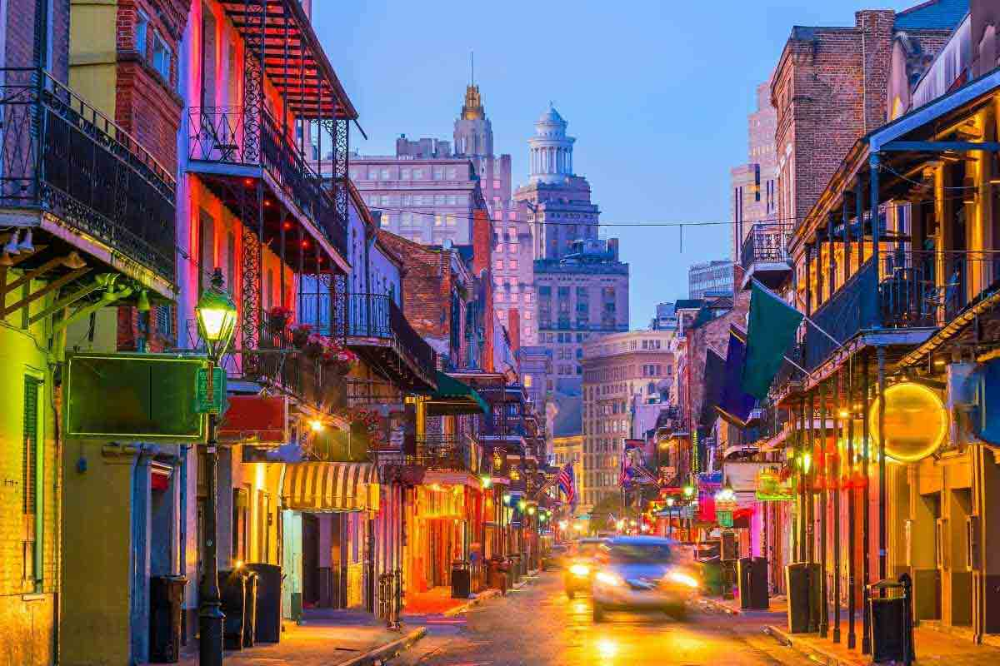
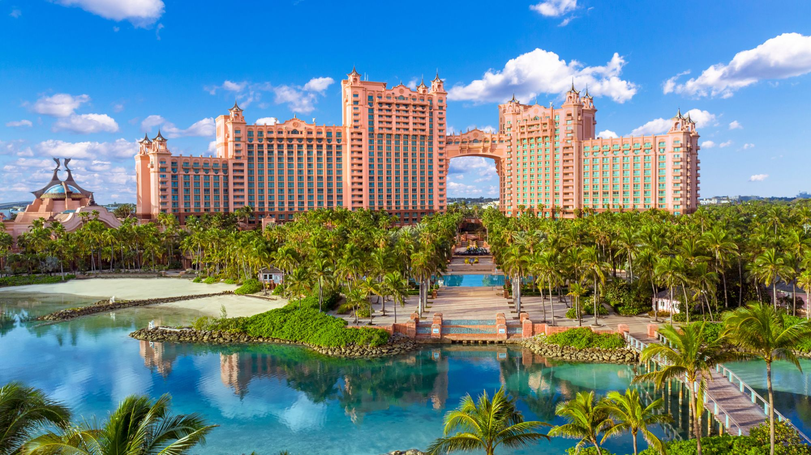
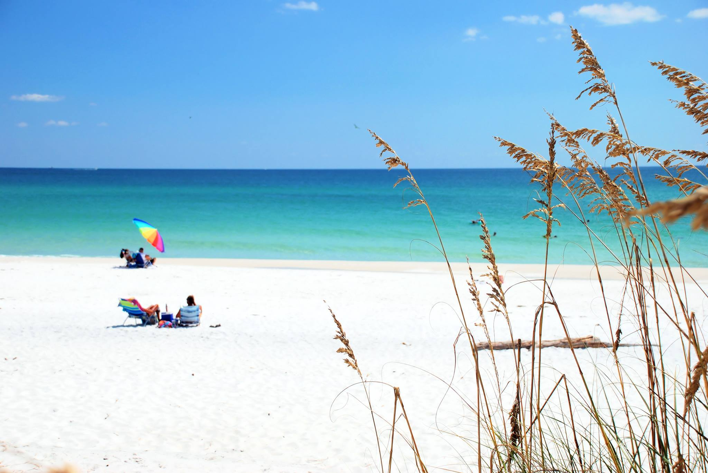
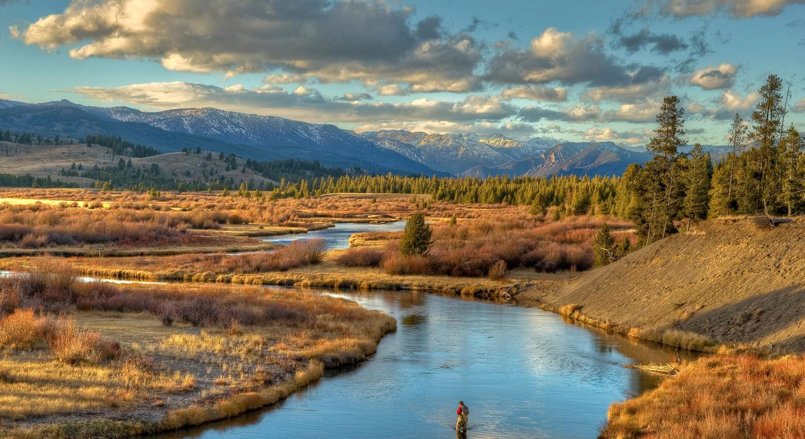
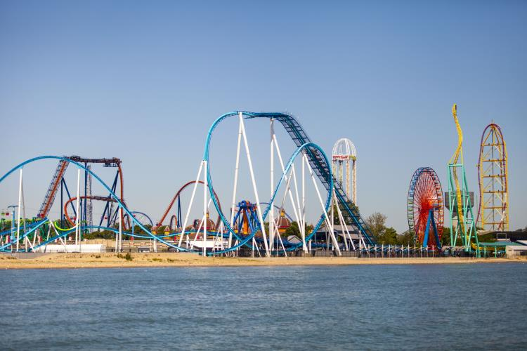
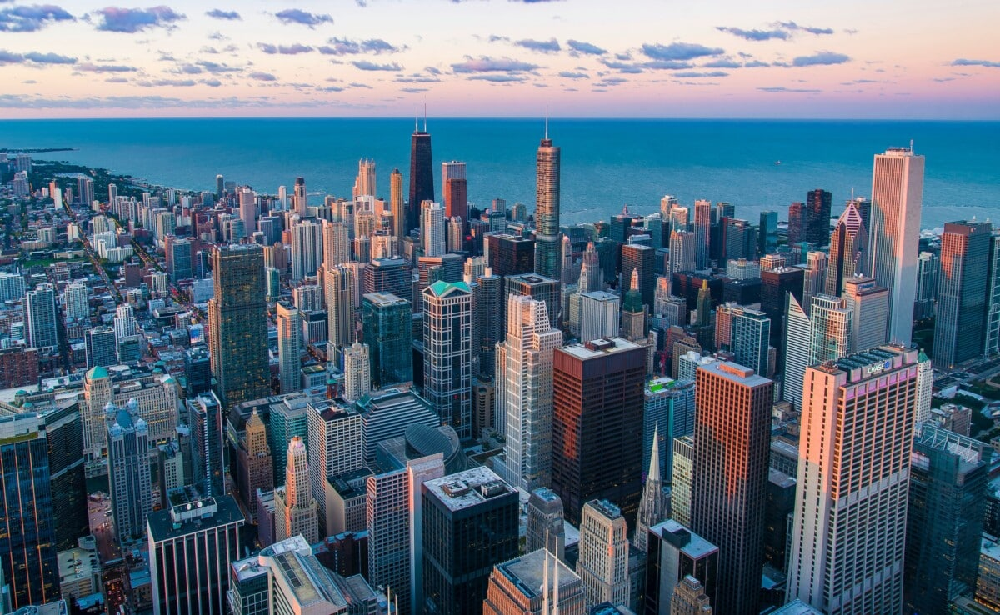
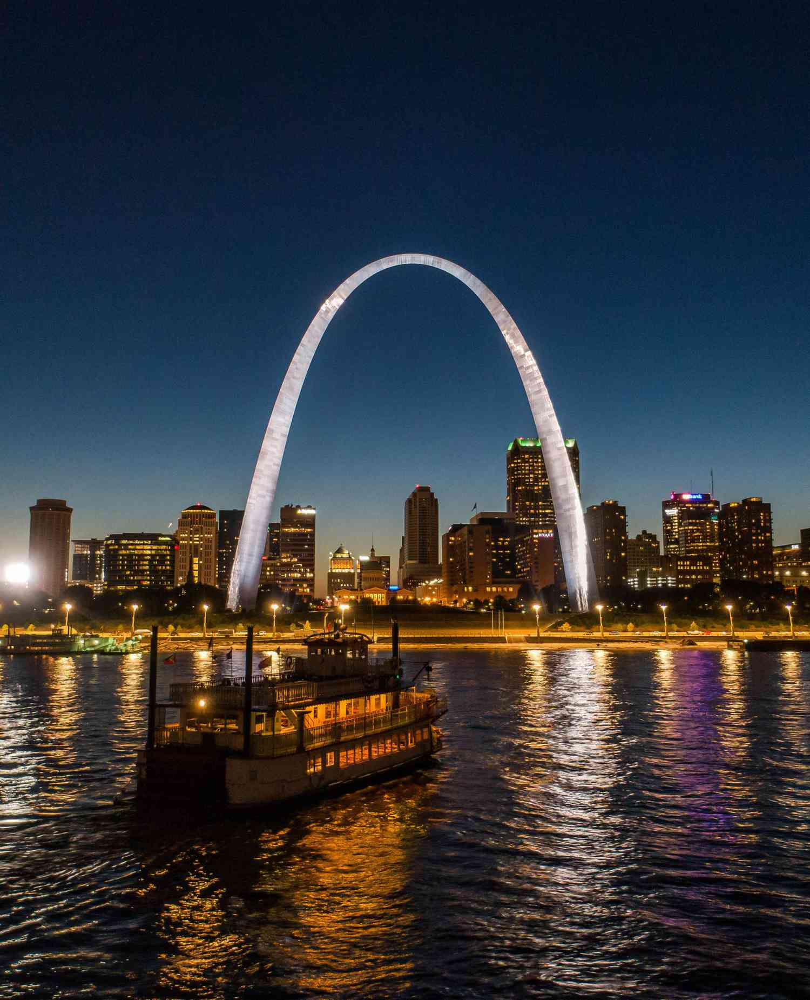

Pictures and Information about my Top Ten Locations
1. Salamanca, Spain
My favorite spot that I have ever traveled to is Spain. I went here in the summer of 2023 for a Study Aborad trip with UNA. I spent one month living with a host family and learning Spanish. The best thing about this city is the infrustruce and culture. The streets are filled with friendly people and there is always lots of events going on in the main square. It is not close to being one of the most popular cities in Spain. However, I think it is a must visit in if you are in the country.
2. Kailua, Hawaii
This city is located on the beutiful island of Oahu. This city is home to the famous beach on Laniki Beach. This beach is quite large with clear water and two mokes in the distance that add greatly to the view compared to other beaches on the island. It is out of the way of the capital city Honolulu which allows you to have a more quiet time.
3. New Orleans, Louisiana
The culture of New Orleans is unmatched. The amount of history in this city is great for young and old to explore. I went here for spring break last year and had a great time seeing the city, learning about the culture, and hanging out on Burbon Street.
4. Nassua, Bahamas
When I visited this city I stay in the Atlantis Resort. This resort is one of the best in the world. It has things to do for young and old. It has it own water parks and aquriams that will fill up much of your time when visiting.
5. Miramar Beach, Florida
Visiting Miramar Beach, Florida, promises the ultimate blend of serene Gulf Coast beauty and vibrant seaside charm. From pristine white sands to turquoise waters perfect for swimming, it's a haven for beach lovers seeking relaxation. Don't forget to explore the unique coastal dune lakes, a phenomenon found in only a few places around the world!
6. West Yellowstone, Montana
Visiting West Yellowstone, Montana, immerses you in the heart of Yellowstone National Park's wonders, with easy access to its iconic geysers and wildlife. Whether exploring Old Faithful's predictable eruptions or marveling at the colorful Grand Prismatic Spring, the park offers unforgettable natural spectacles. Nearby, you can enjoy outdoor activities like hiking, wildlife watching, and scenic drives amidst breathtaking mountain landscapes.
7. Orlando, Flordia

This city is the home of Disney World and Universal Studios. I love theme parks and if that is what you are into this is the spot for you. I always want to go back and visit because of how much fun I have riding all of the rollercoasters and seeing all of the new ones that get added.
8. Sandusky, Ohio
Visiting Sandusky, Ohio, offers a perfect blend of family-friendly attractions and picturesque lakeside charm. As the home of Cedar Point, known as the roller coaster capital of the world, thrill-seekers will find plenty to enjoy. Beyond the amusement park, visitors can relax on the shores of Lake Erie, explore historic sites like the Merry-Go-Round Museum, or indulge in local dining favorites.
9. Chicago, Illinois
Visiting Chicago, Illinois, promises a dynamic urban experience with its iconic skyline, cultural diversity, and renowned architecture. From the towering Willis Tower Skydeck to the iconic Millennium Park's Cloud Gate sculpture, there's no shortage of landmarks to explore. Indulge in the city's vibrant food scene, from deep-dish pizza to gourmet cuisine, and don't miss the opportunity to catch a performance at one of Chicago's famed theaters or jazz clubs.
10. St. Louis, Missouri
Visiting St. Louis, Missouri, offers a rich blend of history, culture, and outdoor attractions. The Gateway Arch, an iconic symbol of the city and the nation's westward expansion, provides stunning views of the Mississippi River and downtown St. Louis. Explore the city's vibrant neighborhoods, like the historic Soulard district or the lively Delmar Loop, known for its eclectic shops, restaurants, and live music venues.